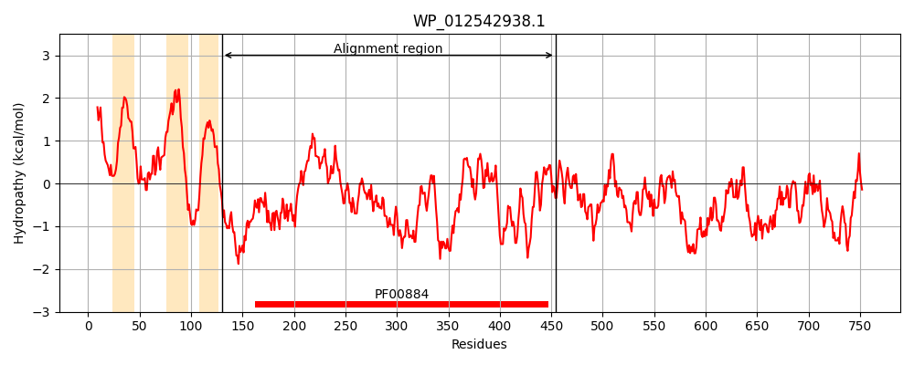
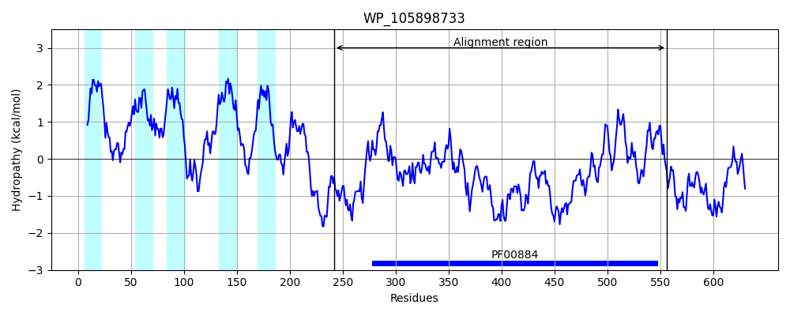
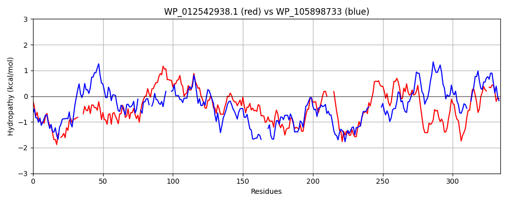

Hit Accession: WP_105898733
Hit TCID: 2.A.127.1.11
Hit Description: gnl|BL_ORD_ID|21714 gnl|TC-DB|WP_105898733.1|2.A.127.1.11 LTA synthase family protein [Haemophilus influenzae]
Mach Len: 334
e:0.000000
Query TMS Count : 3
Hit TMS Count: 5
TMS-Overlap Score: 0.800000
Predicted Substrates:None
BLAST Alignment:
Score: 174 , Bit scores: 71 bits, E-value: 6.9e-13, Alignment length: 334, Percentage identity: 22
Query: 130 QISELVKSQSREGDPDFAA-YYKEPSKRIDNPQ---LNLVYIYGESLERTYFDNDAFPNLTPELGKIKDQGLDFSNTMQLPGTDYTIAGMVASQCGIPLFAPFEGNASASVSSFFPQNICLGDILKNSGYENYFVQGANLRFAGKDVFLKSHGFDHLYGAEELKTTVADPAYRNDWGFYDDTVLDETWKKFEELSRSGKRFSLFALTVDTH----HPDGFISRTCERKRYDVDGKKNLSFSAVSCSQEHIAALIEKIKASPYFKNTVIVVSSDHLAMKNSAWDYLNKHDRSNLFFVLRGDKPQQETLAVKRNTMDNGATVLDILG-GDNYIGLG 454
++ +VK+ D D+ + Y +K + Q N+V + ESL + L+P + ++ +G F N + GT ++ G+ A+ G F P A +++ + D+L GY F+ G F F +GF ++ ++ + +P + WG D+ + D+ + F +L GK F + H +PDG I + K + K ++ + + K S Y+K+T+ ++ +DH + A KH + G P++++ V + +D T+L + G NY +G
Sbjct: 242 EMFRIVKASRGRPDSDYISDKYPTLTKNVATYQGKLKNIVILLQESLGAQFIGTLGGKPLSPNVDQLAKEGWLFEN-LYATGTR-SVRGIEATTAG---FTPTPARAVVKLNNAQSGFFTIADLLHKQGYNTSFIYGGEKHFDNMASFFYGNGFKDIWDQQDYQ----NPKFTGTWGVSDEDLFDKANETFTKLQNEGKPFFSLVFSSSNHDPFEYPDGKIELYEQPKATRNNAAKYADYA--------LGHFFKMAKQSNYWKDTIFLIVADHDSRVGGASLVPIKHFHIPALIIGEGIMPRRDSRLVSQ--IDMPTTLLSLAGVSGNYPMIG 556 | Protein Hydropathy Plots: |
|---|
|  |  |
Pairwise Alignment-Hydropathy Plot:
|
|---|
|  |